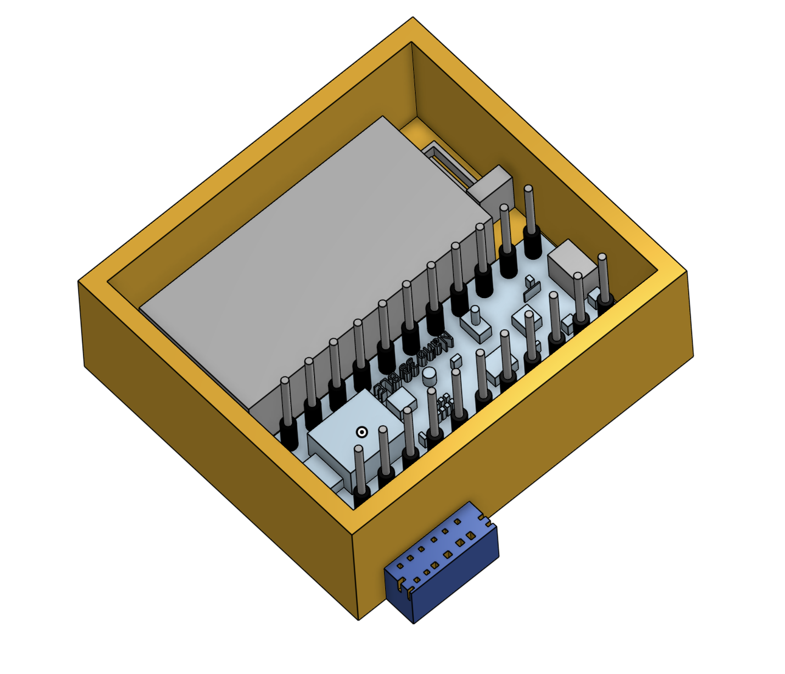
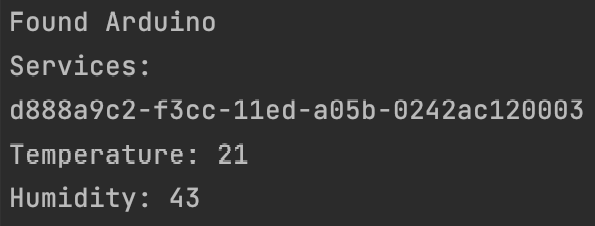
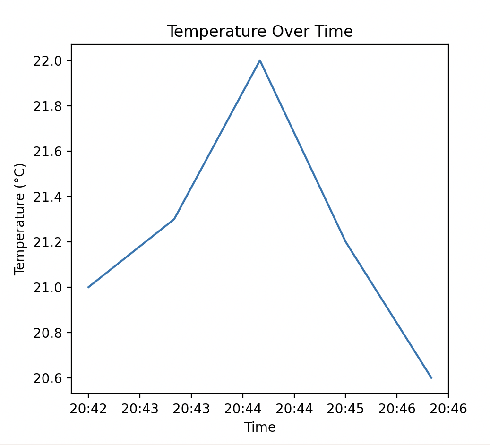
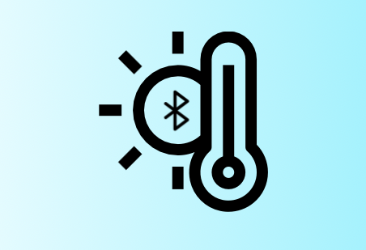

3D CAD Rendering of Project
Personal Project
2024
Embedded Research
Prototyping
3D Modeling
Software Development
May – June 2024
This project consists of hardware and software components. The Arduino reads sensor data and transmits it over Bluetooth, while a Python script scans for the Arduino, retrieves the readings, and logs them periodically into a CSV file. The data can then be visualized by plotting changes over time. All scripts are available in the GitHub Repository.
The CAD model houses a battery, microcontroller, and environmental sensor inside a compact wireless enclosure.

Initial success interfacing with Bluetooth features
Across every system — hardware and software — each component successfully completes its role, ensuring reliability for any users who find this project useful.

Sample trend chart generated from logged dataThe Arduino exposes a Bluetooth service with humidity and temperature characteristics.
The Python script scans for nearby Bluetooth modules, filters by device name, connects to the Arduino, and reads the specific characteristics — humidity and temperature.
Data is periodically written to a CSV file and can be analyzed with Matplotlib to visualize environmental changes over time.
This project gave me hands-on experience with Bluetooth communication on embedded systems, and let me explore the full arc of an embedded project — from hardware prototyping and 3D modeling to software development and data analysis.
